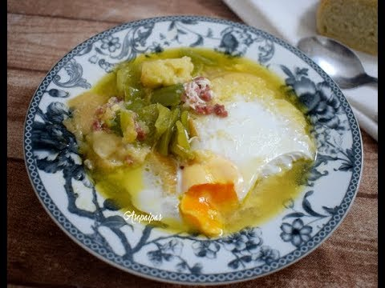

Recetas de sopas y cremas caseras - Comedera.Com
 Ir al contenido principal Ir a la barra lateral primaria
Home Recetas Comida Vegetariana Carnes Recetas de pollo Pescados y Mariscos Arroces Huevos Ensaladas Verduras Sopas y cremas Postres Recetas por países Comida española Comida italiana Comida mexicana Comida peruana Comida venezolana Comida china Inspiración About Comedera / Sopas y cremas
Recetas de sopas y cremas
Imagina un mundo donde no existen las sopas: la gente tira a la basura los huesos de pollo y de carne sin saber el tesoro que hay en su interior, el agua utilizada para hervir los vegetales no tiene ningún valor y la desechan toda, las abuelas nunca consintieron a sus nietos con alguna de esas épicas recetas de sopas y cremas que tanto amamos y recordamos.
¿Verdad que sería un lugar donde no valdría la pena vivir? Menos mal se trata de un ejercicio mental. La realidad es que hemos heredado una gran sabiduría de nuestros antepasados, y todas esas deliciosas recetas de sopas y cremas que preparamos tienen orígenes ancestrales, y sus técnicas de preparación, así como sus ingredientes, poco han cambiado a lo largo de los años.
Por eso creemos que es buena idea conservar las tradiciones y enseñar a la mayor cantidad de personas posibles cómo hacer una buena sopa casera.
En Comedera.Com tenemos nuestras sopas favoritas:
Sopa de pollo: Quizás la más importante de todas. Una de las sopas más alimenticias y deliciosas que existen. ¡Una maravilla para los resfriados y las resacas! Sopa de ajo: la clásica sopa de pan, ajo y huevo con sus respectivas variantes incluyendo la famosa “sopa castellana”. Chupe de camarones: Una poderosísima sopa de origen peruano capaz de levantar muertos. Probarla es enamorarse de ella para siempre. Gazpacho andaluz: la famosa sopa de tomate fría preparada especialmente en épocas de calor. Deliciosa y refrescante. Sopa de verduras: Un clásico muy fácil de preparar. Es una receta casera que se puede hacer con los vegetales que tengas a mano. Salmorejo cordobés: Otra sopa fría famosa hecha a base de tomate. Para muchas personas es más rica que el gazpacho. Yo digo que son 2 cosas diferentes. Lleva huevo y jamón. Sopa de marisco: Nada más delicioso que una sopa casera hecha con magníficos frutos del mar. Puedes usar los mariscos que tengas a disposición, incluso pescado. Caldos: Los caldos son la base de todas las sopas. Pero también sirven para hacer salsas y para saborizar platos. Aprende todo lo que necesitas saber sobre ellos.
Y aquí tienes todas las recetas de sopas y cremas disponibles en nuestra web:
Crema de remolacha (betabel), receta fácil
Prepara una deliciosa sopa de costilla colombiana
Cómo hacer sopa de bolas de verde: receta ecuatoriana
Sopa cremosa de papa, receta fácil
Prepara una deliciosa sopa de maní: receta boliviana
Cómo hacer sopa miso casera
Crema de apio: receta casera
Sopa de pescado, receta casera
Cómo hacer sopa de arroz fácil
Receta de vichyssoise: una crema refrescante
Sopa juliana, receta de sopa ligera y sencilla
Receta de ajoblanco tradicional
Crema de guisantes: receta rápida
Crema de coliflor, receta vegetariana saludable
Cómo hacer crema de marisco casera
Mole de olla, receta tradicional mexicana
Sopa tarasca, receta de Michoacán
Caldo de res con verduras, receta casera
Crema de gambas, receta paso a paso
Receta de crema de verduras fácil y saludable
Sopa minestrone: receta tradicional y fácil
Crema de puerros: receta paso a paso
Receta de sopa de marisco casera
Receta de sopa de cebolla paso a paso
Crema de champiñones fácil y rápida
Receta de crema de calabacín fácil
Cómo hacer sopa borsch rusa
Receta de crema de espárragos verdes
Receta de sopa de fideos casera
Cómo hacer sopa de tomate casera
Ir a la página 1 Ir a la página 2 Ir a la página siguiente »Barra lateral primaria
Recetas destacadas
Cómo hacer arroz blanco perfecto Cómo hacer arroz chino Cómo hacer pan casero Cómo hacer pizza casera - Masa para pizza Cómo hacer paella de marisco Cómo hacer galletas de avena caseras Cómo hacer la tortilla de patatas perfecta Cómo hacer pollo asado perfecto Receta de arroz con pollo: fácil, abundante y deliciosoComiendo saludable
Recetas saludables Postres saludables Recetas light Postres light Recetas bajas en calorías Recetas para adelgazarMás Recetas
Recetas Caseras Recetas de Postres Fáciles Copyright 2021 © Comedera.ComPolítica de Privacidad - Afiliados - Política de Cookies